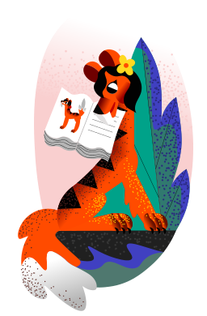

| Книжный рекомендательный сервис | |
|---|---|
| Выберите жанр | Главное меню |
| 
Для многих людей чтение – самый лучший вид отдыха, который расслабляет и успокаивает. От увлекательной книги невозможно оторваться, пока не прочтешь ее «от корки до корки». Чтение развивает воображение и фантазию. Мир книг – прекрасный и удивительный. За каждой обложкой скрывается неповторимая история – со своими героями, событиями и атмосферой. Читая книги, мы погружаемся в этот мир, радуемся или печалимся вместе с персонажами, сочувствуем им или выражаем свое осуждение. Чтение развивает усидчивость и умение самостоятельно находить информацию, выделять из нее главное. Чтение художественных и научно-популярных произведений расширяет эрудицию и кругозор, обогащает знаниями об истории, культуре, искусстве, науке. С начитанным человеком интересно разговаривать, потому что ему всегда есть о чем рассказать. У людей, которые много читают, богатый словарный запас. Они легко выражают свою точку зрения, говорят правильно и красиво. Чтение повышает грамотность. Читая текст, мы зрительно запоминаем, как пишутся слова, и потом не ошибаемся при письме. Иногда это даже называют «врожденной грамотностью». Чтение книг раскрывает человеческую душу. Некоторые прочитанные истории могут запомниться на всю жизнь и даже повлиять на судьбу. Книга – неисчерпаемый источник знаний и преданный друг, сопровождающий нас с самого раннего детства. Человек, который любит читать и размышлять о прочитанном, никогда не соскучится от безделья и одиночества. |
|
| Читайте вместе с нами! | |